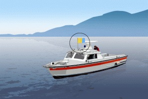

<li class="report-item
            
                
                    report-item-wrong
                
            ">
            <span class="report-item-index">
                <span class="report-item-index-current">114</span>
                <span class="report-item-index-total">116</span>
            </span>
        <a href="#" class="report-item-toggle"></a>
        <strong class="report-item-title">
        Que signifie ce pavillon?
        
            <br>
        
        </strong>
        <div class="report-item-body">
            <ul class="report-item-answers">
                    
                    <li class="report-item-answer
                        
                            report-item-answer-wrong
                        
                        ">
                <span class="report-item-answer-label">Protection contre l’agitation de l’eau</span>
            </li>
                   
                    <li class="report-item-answer
                        
                            report-item-answer-correct
                        
                        ">
                <span class="report-item-answer-label">Bateaux de la police, de la douane ou des gardes-pêche lorsqu'ils veulent entrer en contact avec d’autres bateaux</span>
            </li>
                   
                    <li class="report-item-answer
                        
                            report-item-answer-wrong
                        
                        ">
                <span class="report-item-answer-label">Ancrage dangereux</span>
            </li>
                   
                </ul>
            <div class="report-item-theory is-collapsed" data-theory-index="113">
                <div class="report-item-theory-header overlay-close">Regarder la partie théorique</div>
                <div class="report-item-theory-overlay overlay overlay-info overlay-light overlay-close is-hidden" id="overlay113">
                    <div class="overlay-close overlay-close-cross"></div>
                    <div class="overlay-content">
                    </div>
                </div>
                <div>
                </div>
    </div></div></li>